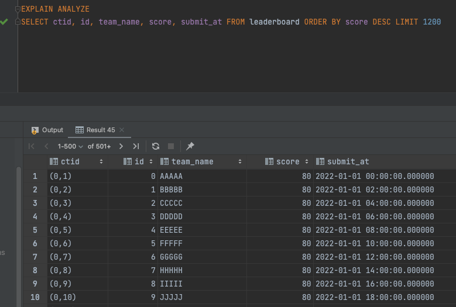

개요
회사에서 리더보드를 제작하면서 같은 점수를 획득한 팀이 아래의 예시와 같이 다르게 정렬되는 문제가 있었다. 문제가 발생한 쿼리는 점수를 기준으로 정렬하여 가장 높은 점수를 얻은 팀이 1위가 되도록 조회하는 쿼리였다.
아래와 같이 전체 순위를 조회하는 쿼리와 상위 5개 팀만을 조회하는 쿼리의 정렬결과가 다른 것을 볼 수 있다.
-- SELECT * FROM leaderboard ORDER BY score desc| id | team_name | score | submit_at ||--------------------------------------------|| 1 | 아싸가오리 | 80 |2022-09-06 06:46:19|| 2 | 혼자왔어요 | 80 |2022-09-06 06:46:19|| 3 | 등차수열 | 80 |2022-09-06 06:46:19|| 4 | ABBA | 80 |2022-09-06 06:46:19|| 5 | 상도덕 | 79 |2022-09-06 06:46:19|... (+ xxx개)-- SELECT * FROM leaderboard ORDER BY score desc LIMIT 5| id | team_name | score | submit_at ||--------------------------------------------|| 4 | ABBA | 80 |2022-09-06 06:46:19|| 1 | 아싸가오리 | 80 |2022-09-06 06:46:19|| 3 | 등차수열 | 80 |2022-09-06 06:46:19|| 2 | 혼자왔어요 | 80 |2022-09-06 06:46:19|| 5 | 상도덕 | 79 |2022-09-06 06:46:19|원인분석
이러한 문제가 발생하는 원인은 정렬하고자 하는 순서를 명확하게 제공하지 않았다는 점에 있다.ORDER BY의 기준이 되는 컬럼이 고유값을 가지지 않기 때문에 명확하게 정렬되지 않고 옵티마이저가 결정하는 최적의 방법에 따라 정렬된다.
이때 옵티마이저는 정렬하고자 하는 row의 수 또는 LIMIT 절 존재여부 등에 맞춰 정렬을 위한 최적의 방법을 결정짓는다.
이렇게 상황별로 정렬을 위한 방법이 변경되기 때문에 결과값이 무작위로 값이 정렬되는 것으로 보이는 것이다.
사용자 : 점수를 기준으로 정렬해줘! 옵티마이저 : 넵! (진행중) 엇 중복되는 값이 있네...? 정렬하는 row 수도 적은데 빠른 A방법으로 정렬하자! 사용자 : 점수를 기준으로 정렬하는데 결과값은 5개만 줘! 옵티마이저 : 넵! (진행중) 엇 중복되는 값이 있는데 ? 결과값 제한이 있네~ 이런 경우에는 B방법으로 정렬하자!해결방법
정렬하고자 하는 컬럼에 중복값이 존재한다면 반드시 고유값을 가지는 컬럼을 ORDER BY 조건 마지막에 추가해주자.
아래의 예제처럼 수정해준다면 중복값이 제멋대로 정렬되는 문제를 해결할 수 있을 것이다!
(기존)SELECT * FROM leaderboard ORDER BY score desc(수정) + submit_at 조건 추가SELECT * FROM leaderboard ORDER BY score desc, submit_at asc심층분석
그러나 사전적인 지식만을 습득하는 것과 정확한 원인과 동작방식을 이해하는 것은 별개의 일이다. 그렇기 때문에 더 정확한 동작원리를 공부해보자.
우선 PostgreSQL의 sort 알고리즘은 아래와 같이 3가지가 있다. 하나씩 차근차근 알아보자.
- Quick Sort
- Heap Sort
- Merge Sort
사전 세팅
직접적으로 실행계획을 찍어보며 옵티마이저 동작방식을 확인하기 위한 데이터를 생성한다.
데이터는 아이디(id), 팀명(team_name), 점수(score), 제출일(submit_at)로 이루어져있다. 팀명, 점수는 중복될 수 있지만 아이디, 제출일은 중복되지 않는 값으로 채워져있다.
-- (1) 테이블 생성CREATE TABLE leaderboard(id int, team_name varchar(20), score int, submit_at timestamp);-- (2) 테스트 데이터 삽입 (점수 80점)INSERT INTO leaderboard(id, team_name, score, submit_at)select ids.idx as id, array_to_string(ARRAY(SELECT chr(65 + round(ids.idx % 26) :: integer) FROM generate_series(1,5)), '') as team_name, 80 as score, (dates.date + interval '2 HOUR' * ids.idx) as submit_atfrom ( select '2022-01-01'::date as date ) datescross join ( select generate_series(0, 100) as idx ) ids;-- (3) 테스트 데이터 삽입 (점수 60점)INSERT INTO leaderboard(id, team_name, score, submit_at)SELECT ids.idx AS id, array_to_string(ARRAY(SELECT chr(65 + round(ids.idx % 26) :: integer) FROM generate_series(1,5)), '') AS team_name, 60 AS score, (dates.date + interval '2 HOUR' * ids.idx) as submit_atFROM ( SELECT '2022-03-01'::DATE AS date ) datesCROSS JOIN ( SELECT generate_series(101, 200) AS idx ) ids;-- (4) 테스트 데이터 삽입 (점수 40점)INSERT INTO leaderboard(id, team_name, score, submit_at)SELECT ids.idx AS id, array_to_string(ARRAY(SELECT chr(65 + round(ids.idx % 26) :: integer) FROM generate_series(1,5)), '') AS team_name, 40 AS score, (dates.date + interval '2 HOUR' * ids.idx) as submit_atFROM ( SELECT '2022-06-01'::DATE AS date ) datesCROSS JOIN ( SELECT generate_series(201, 300) AS idx ) ids;Index Scan
인덱스가 걸린 컬럼을 기준으로 ORDER BY시 데이터 테이블을 읽지 않고 인덱스 테이블을 읽게 되며 정렬 기준은 인덱스를 따릅니다.
- 실습을 위해 생성한 테이블에 인덱스를 생성해준다.
- 인덱스가 걸린
score컬럼을 기준으로 정렬하는 쿼리의 실행 계획을 분석한다. - 인덱스가 적용된 컬럼을 기준으로 정렬을 요청했기 때문에 실행계획에 별도의 정렬로직이 사용하지 않고 있음을 확인할 수 있으며,
score_idx인덱스를 기준으로 정렬되었음을 알 수 있다. - 결과를 확인했으면 인덱스를 지워 이후 쿼리에 영향이 없도록 수정해준다.
-- (1) 인덱스 존재 여부 조회 후 없을 경우 생성postgres.public> select * from pg_indexes where tablename= 'leaderboard'postgres.public> create index score_idx on leaderboard using btree(score)-- (2) 실행계획 조회 & (3) 실행계획 결과postgres.public> EXPLAIN ANALYZE SELECT ctid, id, team_name, score, submit_at FROM leaderboard ORDER BY score DESCQUERY PLAN---------------------------------------------------------------------------------------------------------------------------Index Scan Backward using score_idx on leaderboard (cost=0.15..63.48 rows=1301 width=27) (actual time=0.013..0.197 rows=1301 loops=1)Planning Time: 0.040 msExecution Time: 0.240 ms-- (4) 인덱스 제거postgres.public> drop index score_idxQuick Sort
쿼리가 Index를 사용하지 않고 정렬하고자 하는 데이터의 크기가 작을 경우에 옵티마이저는 Quick Sort 알고리즘을 선택해 정렬한다.
* 여기서 데이터의 크기가 작은 경우는 데이터를 정렬하기 위해 필요한 메모리의 크기가 DB에 설정된 work_mem보다 작은 경우를 의미한다.
* work_mem이란 PostgreSQL DB가 정렬/해시/조인 등의 작업을 처리할 때 사용할 수 있는 메모리의 크기를 의미하며, 여러 정렬/해시/조인 작업이 함께 일어난다면 각각 메모리가 사용된다.
* work_mem의 기본값은 4MB이며 설정은 1GB / (max_connections * 2) 정도가 적당하다고 한다.
* 예) 1GB / 100 커넥션 = 1024 * ( 100 * 2 ) = 5.12 (MB) = 5MB
-- (1) DB에서 정렬 시 사용 가능한 메모리 출력postgres.public> SHOW work_mem work_mem------------ 4MB-- (2) Quick Sort 정렬 사용postgres.public> EXPLAIN ANALYZE SELECT ctid, id, team_name, score, submit_at FROM leaderboard ORDER BY score DESC; QUERY PLAN---------------------------------------------------------------------------------------------------------------------------Sort (cost=56.58..58.58 rows=800 width=80) (actual time=0.091..0.103 rows=301 loops=1) Sort Key: score DESC Sort Method: quicksort Memory: 48kB -> Seq Scan on leaderboard (cost=0.00..18.00 rows=800 width=80) (actual time=0.008..0.041 rows=301 loops=1)Planning Time: 0.057 msExecution Time: 0.122 ms위 쿼리를 실행해보고 실행계획을 간단하게 이해해보면 다음과 같습니다.
- 우리가 테스트하고 있는 DB는
work_mem이 4MB로 설정되어 있다. Sort Method: quicksort Memory: 150kB부분을 통해 알 수 있듯이 정렬 시 메모리 150kB를 사용하게 된다.- 이때 쿼리는 사용할 수 있는 메모리 크기인 4MB를 초과하지도 않고 LIMIT 조건 또한 존재하지 않기 때문에 옵티마이저는 Quick Sort 알고리즘을 사용해 정렬하게 된다.
- 결과적으로 Sort Method로 quicksort가 사용된 것을 확인할 수 있다.
아래는 Quick Sort를 사용한 조회 쿼리 실행시 출력되는 쿼리 결과입니다.
Heap Sort - 1
쿼리에 LIMIT 절이 포함되고 정렬하기 위해 필요한 메모리 크기가 work_mem보다 작은 경우 옵티마이저는 Heap Sort 알고리즘을 선택해 정렬한다.
앞선 쿼리들과 마찬가지로 실행계획을 분석해보면 아래와 같습니다.
- 테스트하고 있는 DB는 work_mem이 4MB로 설정되어 있다.
- 다른 것은 모두 동일하지만 쿼리에 LIMIT 절이 사용되었으며, 쿼리 실행 시 메모리는 28kB를 사용한다.
- 쿼리는 사용할 수 있는 메모리를 초과하지 않았고, LIMIT 조건이 사용되었기 때문에 옵티마이저는 Heap Sort 알고리즘을 사용하도록 결정한다.
- 결과적으로 Sort Method로는 top-N heapsort가 사용된 것을 확인할 수 있다.
-- (1) DB에서 정렬 시 사용 가능한 메모리 출력postgres.public> SHOW work_mem work_mem------------ 4MB-- (2) Heap Sort 정렬 사용 (LIMIT 10 & OFFSET 0)postgres.public> EXPLAIN ANALYZE SELECT ctid, id, team_name, score, submit_at FROM leaderboard ORDER BY score DESC LIMIT 10 OFFSET 0;QUERY PLAN---------------------------------------------------------------------------------------------------------------------------Limit (cost=11.51..11.54 rows=10 width=28) (actual time=0.096..0.098 rows=10 loops=1) -> Sort (cost=11.51..12.27 rows=301 width=28) (actual time=0.095..0.096 rows=10 loops=1) Sort Key: score DESC Sort Method: top-N heapsort Memory: 25kB -> Seq Scan on leaderboard (cost=0.00..5.01 rows=301 width=28) (actual time=0.010..0.044 rows=301 loops=1)Planning Time: 0.042 msExecution Time: 0.111 ms이제 조회 결과를 봐보면 앞서서 Quick Sort를 사용해 정렬했을 때와는 달리 뭔가 다른 점이 있는 것 알 수 있다. 첫번째 row에 있던 ctid(0,1)이 가장 뒤로 빠지게 되었다.
쿼리에 LIMIT, OFFSET 조건이 추가됨에 따라 정렬 알고리즘이 Quick Sort에서 Heap Sort로 바뀌게 되었고, 이에 따라 정렬 결과도 바뀌게 된 것이다.
Heap Sort - 2
여기서 더 나아가서 OFFSET 값을 바꾸어 정렬해보면 다음과 같은 결과가 나오는 것을 확인할 수 있다.
예상대로라면 ctid(0,11)이 첫번째로 조회되어야 하지만 이전 페이지에서 조회되었던 ctid(0,1) 중복 조회되는 것을 확인할 수 있다. 이러한 문제의 가장 큰 원인은 Quick Sort와 Heap Sort가 같은 값을 항상 똑같은 결과대로 정렬하지 못하는 Unstable Sorting이기 때문이다.
결과적으로 리더보드의 순서가 다르게 출력된 원인은 이렇게 2가지였음을 알게 되었다.
- 다른 알고리즘을 사용한 정렬
- Unstable Sorting 알고리즘
-- (3) Heap Sort 정렬 사용 (LIMIT 10 & OFFSET 10)postgres.public> EXPLAIN ANALYZE SELECT ctid, id, team_name, score, submit_at FROM leaderboard ORDER BY score DESC LIMIT 10 OFFSET 10;QUERY PLAN---------------------------------------------------------------------------------------------------------------------------Limit (cost=13.04..13.07 rows=10 width=28) (actual time=0.097..0.099 rows=10 loops=1) -> Sort (cost=13.02..13.77 rows=301 width=28) (actual time=0.096..0.097 rows=20 loops=1) Sort Key: score DESC Sort Method: top-N heapsort Memory: 26kB -> Seq Scan on leaderboard (cost=0.00..5.01 rows=301 width=28) (actual time=0.010..0.044 rows=301 loops=1)Planning Time: 0.041 msExecution Time: 0.111 msMerge Sort
정렬 시 필요한 데이터의 크기가 work_mem보다 클 경우 옵티마이저는 Merge Sort 알고리즘을 선택해 정렬한다.
이를 확인해보기 위해서 db의 work_mem을 아래와 같이 줄이고 테스트 해보면 예상대로 실행계획이 Merge Sort를 사용해 정렬하는 것을 확인할 수 있다.
-- (1) 많은 테스트 데이터 삽입 (점수 20점)INSERT INTO leaderboard(id, team_name, score, submit_at)SELECT ids.idx AS id, array_to_string(ARRAY(SELECT chr(65 + round(ids.idx % 26) :: integer) FROM generate_series(1,5)), '') AS team_name, 20 AS score, (dates.date + interval '1 HOUR' * ids.idx) as submit_atFROM ( SELECT '2022-09-01'::DATE AS date ) datesCROSS JOIN ( SELECT generate_series(301, 13000) AS idx ) ids;-- (2) 사용 가능한 work_mem 확인 및 축소postgres.public> SHOW work_mem; work_mem------------ 4MBpostgres.public> SET work_mem = '64kB';postgres.public> SHOW work_mem; work_mem------------ 64kB -- (3) 많은 테스트 데이터 삽입 (점수 20점)postgres.public> EXPLAIN ANALYZE SELECT ctid, id, team_name, score, submit_at FROM leaderboard ORDER BY score DESCQUERY PLAN---------------------------------------------------------------------------------------------------------------------------Sort (cost=120.81..124.06 rows=1301 width=28) (actual time=15.185..21.683 rows=1301 loops=1) Sort Key: score DESC Sort Method: external merge Disk: 64kB -> Seq Scan on leaderboard (cost=0.00..22.01 rows=1301 width=28) (actual time=0.015..7.351 rows=1301 loops=1)Planning Time: 0.044 msExecution Time: 27.902 ms여기에 Merge Sort에는 다른 정렬과는 다르게 Stable Sorting이라는 특징이 있다.
아래 사진을 통해 보면 Heap Sort는 무작위로 값이 정렬되는 반면, Merge Sort는 항상 정해진 값을 내려주는 사실을 확인할 수 있다.
(ctid 값을 보면 1번은 뒤죽박죽으로 섞여있지만, 2번은 일관된 순서로 조회되고 있음을 알 수 있다.)
(1. Heap Sort를 사용한 경우)
 (2. Merge Sort를 사용한 경우)
마지막으로 하나 더 알아두어야 할 것이 있는데 바로 OFFSET 값 증가에 따른 사용 메모리양 증가다. LIMIT 값이 10으로 고정되어 있더라도 OFFSET 값이 바뀜에 따라 쿼리 실행에 필요한 메모리 크기가 달라질 수 있다.
이해를 위해 예시를 들어 설명하면 페이징 처리 시 페이지 수가 낮은 경우에는 Heap Sort가 적용되다가 페이지 수가 많아져 OFFSET 같이 커지는 경우 Merge Sort가 적용되어 조회되는 게시물의 순서가 뒤바뀌는 문제가 발생할 수도 있다.
-- (1) LIMIT 200, OFFSET 0 (Memory: 40kB)postgres.public> EXPLAIN ANALYZE SELECT ctid, id, team_name, score, submit_at FROM leaderboard ORDER BY score DESC LIMIT 200QUERY PLAN---------------------------------------------------------------------------------------------------------------------------Limit (cost=78.24..78.74 rows=200 width=28) (actual time=14.929..17.647 rows=200 loops=1) -> Sort (cost=78.24..81.49 rows=1301 width=28) (actual time=14.918..15.846 rows=200 loops=1) Sort Key: score DESC Sort Method: top-N heapsort Memory: 40kB -> Seq Scan on leaderboard (cost=0.00..22.01 rows=1301 width=28) (actual time=0.014..7.430 rows=1301 loops=1)Planning Time: 0.050 msExecution Time: 18.598 ms-- (2) LIMIT 200, OFFSET 1000 (Memory: 560kB)postgres.public> EXPLAIN ANALYZE SELECT ctid, id, team_name, score, submit_at FROM leaderboard ORDER BY score DESC LIMIT 200 OFFSET 1000QUERY PLAN---------------------------------------------------------------------------------------------------------------------------Limit (cost=2258.56..2258.68 rows=10 width=28) (actual time=135.169..135.420 rows=10 loops=1) -> Limit (cost=2258.56..2259.06 rows=200 width=28) (actual time=135.159..135.331 rows=10 loops=1) -> Sort (cost=2256.06..2297.92 rows=16743 width=28) (actual time=126.884..130.991 rows=1010 loops=1) Sort Key: leaderboard.score DESC Sort Method: external merge Disk: 560kB -> Seq Scan on leaderboard (cost=0.00..276.43 rows=16743 width=28) (actual time=0.012..61.390 rows=13001 loops=1)Planning Time: 0.092 msExecution Time: 135.661 ms결론
- 중복값이 존재하는 컬럼을 기준으로 정렬할 경우 꼭 UNIQUE 한 값을 가지는 컬럼을 ORDER BY 조건 뒤에 추가해줘야 조회 시 데이터가 잘못 정렬되는 경우를 방지할 수 있다.
- 해결 방법은 비교적 간단한(?) 문제였지만 문제가 발생하는 근본적인 이유, 그 이유로 인해 발생할 수 있는 사이드 이펙트 등을 고려하는 건 다른 문제라는 걸 깨닳았다.
- 복잡한 쿼리를 짤 때는 항상 실행계획을 통해 쿼리가 내가 의도한 대로 동작하는 지 확인하는 작업이 필요할 것 같다.
- 단순히 CRUD 수준의 Database 지식이 멈추지 말고 실제 동작원리 수준을 이해하고 사용해야 진정 "이해했다"라고 할 수 있을 것 같다. 문제 해결에만 집중하지 말고 해결과정, 해결 후 개선방안에도 집중해서 공부하는 사람이 되자.